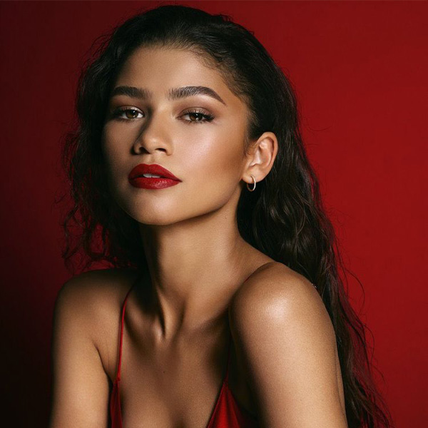
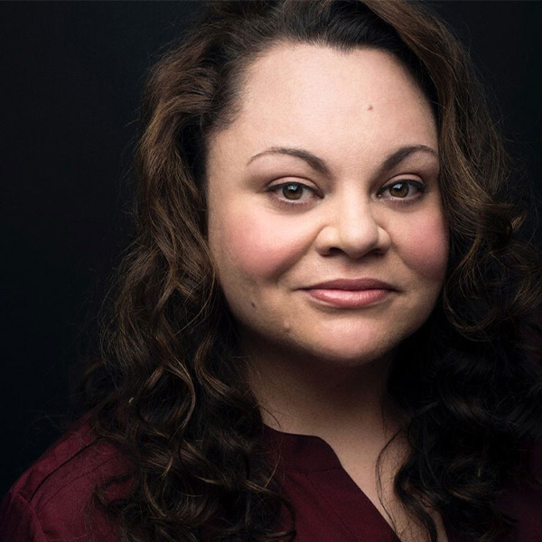
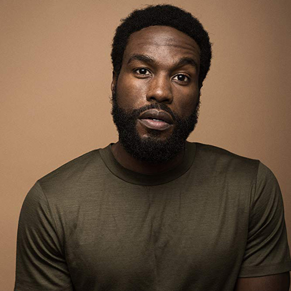

Character
-
- Hugh Jackman
- Phineas Taylor Barnum
- He embarked on an entertainment career, first with a variety troupe called "Barnum's Grand Scientific and Musical Theater", and soon after by purchasing Scudder's American Museum which he renamed after himself.

-
- Michelle Williams
- Charity Barnum
- A woman who was born as a daughter of an upper class but has a belief that is independent of her status enough to marry her poor friend Barnum. He points out the wrong side of the upper class, saying, "We only need a few good things."

-
- Zac Efron
- Philip Carlyle
- He is a from the upper class, who has succeeded in the success of the play several times and has both wealth and reputation. Barnum, who had been ignored for being vulgar by high-class society, offers a partnership to create a show that would work for them.
-
- Rebecca Ferguson
- Jenny Lind
- The most popular opera singer in all Europe. He is a big star nicknamed "Sweden's Nightingale" for his good deed of donating most of the money he earned from singing and singing to orphans and widows. I meet Barnum for the first time in the UK and accept Barnum's offer.


-
- Zendaya Coleman
- Anne Wheeler
- Air acrobatics. He applies for Barnum's circus team with his older brother W.D. Wheeler to perform air acrobatics. It didn't appear in the movie separately, but unlike his brother, Anne looks like she can never appear without mixing white blood at first glance.

-
- Keala Settle
- Letty Lutz
- As one of Barnum's circus members, Barnum personally visits and casts journalists in the process of recruiting them to the museum. Rumors that there is an unusual person admire Banum when he hears a beautiful song from somewhere, and he was a woman with a rich beard and a fat body.

-
- Yahya Abdul
- W.D. Wheeler
- Anne's older brother and younger brother have lived doing aerial acrobatics. He recognizes the relationship between Philip and Anne and disapproves of each other in the heart for his younger brother, but later he seems to acknowledge the relationship between the two.
